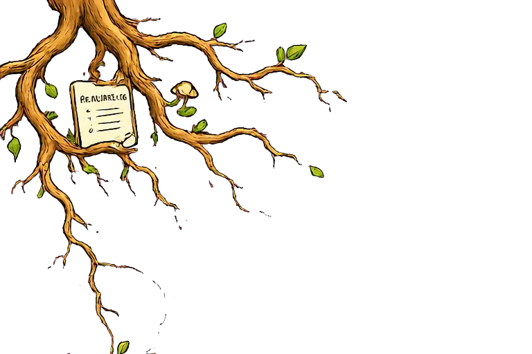
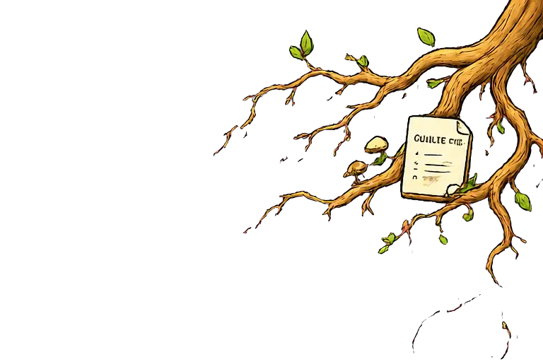
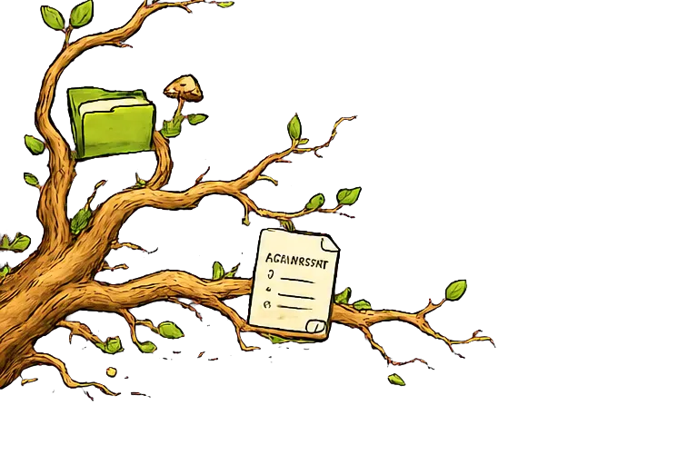
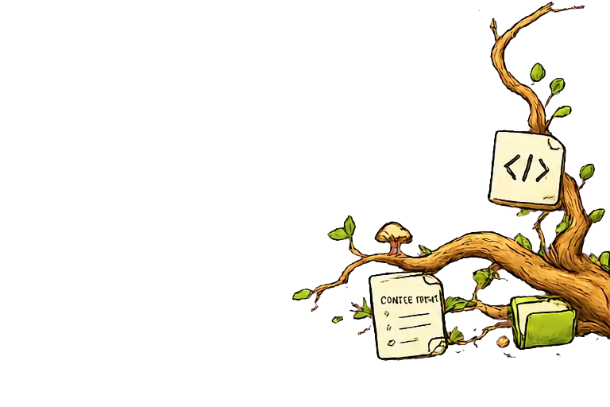

🌳 trigger-tree
Gate documentation discovery in CI.
Measure whether the CLAUDE.md you pay for on every request changes observable behavior.
100% local · zero model tokens · no cloud, no analytics vendors
CI gate · day one
Deterministic and telemetry-free. A regression fails the PR with the affected file and a suggested fix.
Instruction adherence · a few sessions
Per directive: opportunities, followed evidence, uncertainty, and the recurring cost of always-loaded context.
route-telemetry 7/8 followed · 88% · warming
checks-before-commit 5/6 followed · 83% · warming
~190 tokens/session · unobserved ≠ violated
The demo above is a faithful mock.
This is the real thing — an actual terminal recording of tt watch --demo:
The dashboard's written counterpart: view an example insights report — same synthetic demo data, full format.
🔥 Heat & cold maps
Attention cools with a 30-day half-life while lifetime reads stay visible. Focused top 10 live; exact 7/30/90-day windows in insights. Captures rg/grep/find and expanded Bash reads.
📈 Proof, not vibes
/tt suggestions proposes fixes with evidence. /tt note marks the change; the trend shows whether it worked.
🔒 Local by design
Telemetry stays local and gitignored. Before setup, prompts are hashes and new adherence capture is off. Setup makes each privacy choice explicit. Stdlib only, zero network calls.
🅰️ A grade your PO gets
Coverage, verified folder-router reachability, and search concentration distilled into one documentation health score — trackable sprint over sprint.
⚡ Zero model tokens
Hooks run shell-side in milliseconds. Measuring costs nothing — not in tokens, not in latency, not in context.
🤝 Claude Code · Codex
Native lifecycle hooks feed one git-root dataset on both agents. Python CI covers macOS, Linux, Windows and Python 3.10–3.14; native Windows hook launch uses Claude's documented exec form but is not exercised end-to-end in CI.
Gate your CI on discoverability
The structural gate works immediately: router coverage, orphaned docs, folder entry points, and watch scope. It needs no telemetry and nothing leaves your runner.
- uses: Hedde/trigger_tree@v1.25.1 # GitHub Actions # GitLab CI: pip install trigger-tree # tt gate --code-quality gl-code-quality-report.json
Commit a baseline once (tt gate --update-baseline).
A PR that makes docs harder to discover fails with the exact file and fix. The gate
checks wiring, not whether an instruction changed behavior. Discoverable never means discovered;
behavior is proven by telemetry, not by the gate.
Does your CLAUDE.md actually work?
Injected instructions are already loaded, so trigger-tree measures a narrower question: when a user-confirmed directive applied, did its deterministic probe observe the requested behavior?
| Directive | Opportunities | Followed | Rate | Confidence |
|---|---|---|---|---|
| Route telemetry questions | 8 | 7 | 88% | warming |
| Run checks before committing | 6 | 5 | 83% | warming |
| Preserve stdlib-only runtime | — | — | — | unobservable |
Your always-loaded context is ~190 tokens per session. 2 directives (~34 tokens) have not been triggered in the 12 sessions where their capture was active (of 12 recorded over 9.8 days).
Subagent personas are measured the same way. Every definition
under .claude/agents/ sits in the system prompt on every request, so a
persona you never invoke is recurring cost just like an untriggered rule. Only the
persona name is recorded, never the task given to it.
Unobserved means evidence was not captured; it does not mean violated. Zero opportunities is never-triggered, not 0% — and only counted over sessions where that probe was actually being captured. Rates below five usable opportunities are provisional. Unobservable directives are split by cause: no testable condition is advice you can act on, needing the diff is our boundary. Measurement is deterministic and zero-token; only model-assisted manifest authoring uses tokens, and the user confirms every probe.
Honest time to value
Immediate. No telemetry required.
After several applicable opportunities—usually a few working sessions.
Directional during warm-up; strongest after roughly a month.
Why this matters
In AI-assisted development, documentation is the steering wheel: it tells the assistant how your team builds software. But a rule that is never read protects nothing — an unread guardrail fails silently, and you only notice when the AI "ignores" a convention it simply never found. trigger-tree measures what actually gets read, flags what never does, and proves whether your fixes worked. Documentation becomes monitored infrastructure instead of a hopeful artifact.
And this metric exists nowhere else: agent observability platforms measure tokens and traces — none measure which of your docs the assistant actually read. Anthropic's own guidance says to keep CLAUDE.md lean; trigger-tree provides evidence for what to review, what to protect or reroute, and what to rescue.
One signal, with its evidence attached
- 1 of 11 evaluable docs consulted
- 0 unreferenced router gaps
- no distributed-search concentration yet
The eventual grade is trackable sprint over sprint. Until the evidence is mature, the public badge deliberately hides the provisional C (64).
Different evidence, different questions
What did the model call, spend, and produce?
Is the documentation structurally or stylistically valid?
Which local project docs did the coding assistant discover?
Install
Claude Code
Slash commands, Claude hooks, and optional Claude statusline.
/plugin marketplace add Hedde/trigger_tree /plugin install trigger-tree@trigger-tree /tt setup # local 200-character previews; choose hash or off /tt doctor
OpenAI Codex
Codex lifecycle hooks and natural-language workflows. Codex's built-in /statusline is separate.
codex plugin marketplace add Hedde/trigger_tree codex plugin add trigger-tree@trigger-tree # restart, then trust the four hooks in the TUI # (untrusted hooks are skipped silently; # re-review after upgrades)
Where it appears: this GitHub marketplace installs immediately under your configured
marketplace/Installed plugins. It will appear under OpenAI Curated only after a separate OpenAI submission,
review, approval, and publish step. Prefer a standalone CLI without a plugin? pipx install trigger-tree (or uvx --from trigger-tree tt) gives the same local tt toolkit.
Use it
Claude Code uses the /tt commands below. Codex uses
@trigger-tree—either with the same word, as in @trigger-tree watch,
or followed by plain language such as “Show trigger-tree status.” Both work.
| Command | Does |
|---|---|
/tt status | Snapshot: reads, hot files, untouched paths |
/tt watch | This dashboard, live, in your terminal |
/tt insights | Heat/cold map, router reachability, search patterns + HTML |
/tt instructions | Per-directive opportunities, followed evidence, uncertainty, and cost |
/tt suggestions | Max 5 evidence-backed router fixes |
/tt badge | Write a public-safe docs-health endpoint JSON |
/tt note | Annotate router changes on the timeline |
/tt doctor | Check hook liveness, watch coverage, privacy, and telemetry |
/tt setup [truncate|hash|off] | Wire the project, report watch coverage, and choose prompt privacy |
/tt gate | Deterministic discoverability score; gate CI on regressions |
/tt uninstall | Remove statusline wiring while preserving telemetry for explicit deletion |
Common questions
Can it tell me whether my CLAUDE.md works?
It cannot prove understanding or causation.
It can show whether a user-confirmed, deterministic probe observed the requested
behavior when a directive applied. Run /tt instructions --init, review and
commit the manifest, then /tt instructions. Capture-disabled probes are
excluded, and unobserved never means violated.
Why does my coding agent ignore our conventions?
Often it never found the doc that states them — an unread guardrail fails
silently. The heat/cold map shows which conventions were actually consulted, and /tt suggestions proposes
router links for docs with evidence they are being missed. It reports discovery, not understanding.
How can I measure documentation usage without sending data anywhere?
The hooks log paths and metadata to a gitignored file inside your own
repository. No cloud, no analytics, no model tokens — /tt doctor shows exactly what is wired and recorded.

